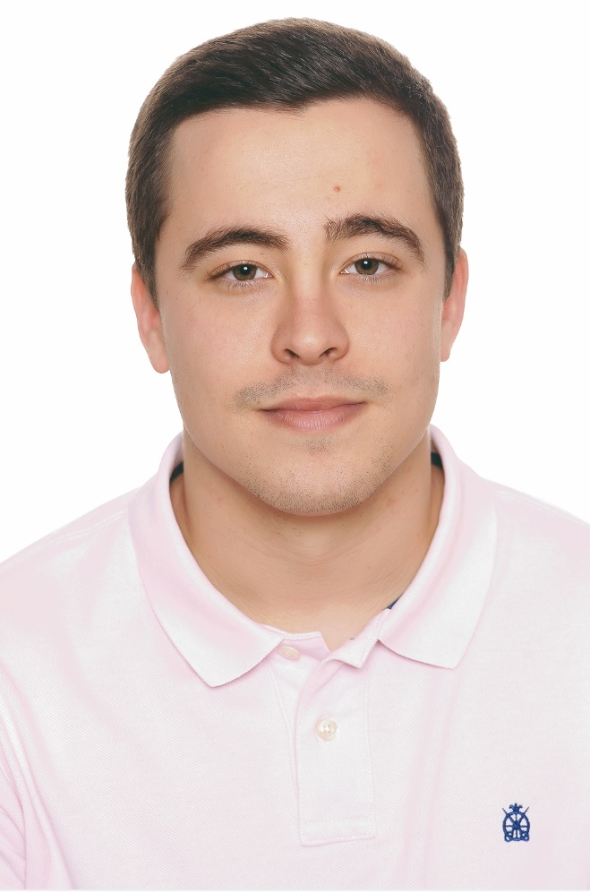

Manuel Pérez Escribano
Computational chemist working on charge transport in organic semiconductors, interactions at photovoltaic interfaces, and molecular recognition and self-assembly.
Junior postdoctoral researcher, Institute of Molecular Science (ICMol), University of Valencia

MPEAbout
I am a computational chemist interested in how molecules interact, assemble and transport charge in organic and hybrid materials. My work spans three connected topics: charge transport in disordered organic semiconductors, the interactions that govern performance at photovoltaic interfaces, and the molecular recognition and self-assembly processes that shape these materials. My expertise covers molecular and periodic density functional theory (DFT), molecular dynamics, enhanced sampling and kinetic Monte Carlo simulations.
I obtained my PhD in Theoretical Chemistry and Computational Modelling at the University of Valencia in 2026 (cum laude, International Doctorate mention), supervised by Dr. Joaquín Calbo and Prof. Enrique Ortí. Before that I completed the Erasmus Mundus MSc in the same field at KU Leuven (2022, summa cum laude) and a BSc in Chemistry at the University of Murcia (2020).
I am currently a junior postdoctoral researcher at the Institute of Molecular Science (ICMol), University of Valencia, working with Dr. Juan Aragó.
Publications
14 peer-reviewed articles, 7 as first or co-first author. My name is in bold; ‡ marks equal contribution and * corresponding author. Full and up-to-date list on Google Scholar and ORCID.
-
1
An efficient approach to estimate electronic couplings in molecular pairs using molecular orbital grids: A generalization of CubeMap
J. Chem. Phys. 2026, 165, 174121. DOI
-
2
Hole mobilities in (pseudo-)amorphous organic semiconductors
J. Chem. Phys. 2026, 164, 224116. DOI
-
3
Templating Rules for Mechanically Interlocked Carbon Nanotubes
J. Am. Chem. Soc. 2026, 148, 23200–23207. DOI
-
4
The Chemistry From Tin Iodide Molecular Inks to FASnI3 Nanocrystals
Small 2026, 22, e11842. DOI
-
5
Integration of p-type-doped carbon nanostructures as additives for boosting spiro-OMeTAD performance in perovskite solar cells
J. Mater. Chem. A 2025, 13, 41260–41273. DOI
-
6
Spiro-Phenothiazine Hole-Transporting Materials: Unlocking Stability and Scalability in Perovskite Solar Cells
Adv. Mater. 2025, 38, e05475. DOI
-
7
Charge Transport in Structurally Related Organic Semiconductors: Experimental Determination and Computational Modeling in Crystalline and Amorphous Scenarios
J. Phys. Chem. C 2025, 129, 5960–5972. DOI
-
8
Growth mechanism of oleylammonium-based tin and lead bromide perovskite nanostructures
J. Mater. Chem. C 2024, 12, 15152–15162. DOI
-
9
Cu(II) and Ni(II) Phthalocyanine-Based Hole-Transporting Materials for Stable Perovskite Solar Cells with Efficiencies Reaching 20.0%
Sol. RRL 2024, 8, 2400371. DOI
-
10
Morphology, dynamic disorder, and charge transport in an indoloindole-based hole-transporting material from a multi-level theoretical approach
Faraday Discuss. 2023, 250, 202–219. DOI
-
11
Phosphorescent properties of heteroleptic Ir(III) complexes: uncovering their emissive species
J. Phys. Chem. A 2023, 127, 7241–7255. DOI
-
12
Dimeric tetrabromo-p-quinodimethanes: synthesis and structural/electronic properties
Chem. Sci. 2023, 14, 10112–10120. DOI
-
13
The radiative surface hopping (RSH) algorithm: Capturing fluorescence events in molecular systems within a semi-classical non-adiabatic molecular dynamics framework
J. Chem. Phys. 2023, 158, 124104. DOI
-
14
Influence of alkyl chain length on the photovoltaic properties of dithienopyran-based hole-transporting materials for perovskite solar cells
J. Mater. Chem. C 2023, 11, 8223–8230. DOI
CV
Positions
- Oct 2026 – presentJunior postdoctoral researcherICMol, University of Valencia. With Dr. Juan Aragó
- 2022 – 2026Predoctoral researcherICMol, University of Valencia. With Dr. Joaquín Calbo and Prof. Enrique Ortí
Education
- 2026PhD in Theoretical Chemistry and Computational ModellingUniversity of Valencia. Cum laude, International Doctorate mention
- 2022Erasmus Mundus MSc in Theoretical Chemistry and Computational ModellingKU Leuven. Summa cum laude
- 2020BSc in ChemistryUniversity of Murcia. Extraordinary End of Degree Award
Teaching and outreach
- 2022 – 2026Undergraduate teaching180 h (18 ECTS) in the Chemistry and Pharmacy degrees, University of Valencia
- 2023 – 2024Organising committeesJ2IFAM2024 and YRChem2023, University of Valencia
- 2022 – 2024Science outreachPint of Science 2024, Química a l’Escola (3 editions), European Researchers’ Night 2022 and Expociencia (2 editions)
Research stays
- Apr – Jul 2025 (4 months)IOM-CNR, Cagliari, ItalyProf. Alessandro Mattoni. Perovskite force fields and self-assembled HTMs
- 2022 (2 months)DIPC, Donostia-San Sebastián, SpainDr. Daniel Reta. Molecular magnetism
- Jan – May 2022 (5 months)University of Pisa, ItalyProf. Giovanni Granucci. Master’s thesis
Grants
- 2022 – 2026Ayudas para contratos predoctorales para la formación de doctores 2021Four-year predoctoral contract funded by MCIN/AEI and the ESF+, University of Valencia
- 2022 (2 months)DIPC internship grantDonostia International Physics Center, Donostia-San Sebastián
- 2020 – 2022Erasmus Mundus scholarshipEuropean Commission (Erasmus+), to study the Master in Theoretical Chemistry and Computational Modelling at KU Leuven, Belgium
- 2019 – 2020 academic yearBeca de Colaboración en Departamentos UniversitariosMinistry of Education and Vocational Training, to collaborate with the Department of Physical Chemistry, University of Murcia
Awards
- 2020Extraordinary End of Degree Award (Premio Extraordinario de Fin de Grado)Faculty of Chemistry, University of Murcia
Contact
University of Valencia
C/ Catedrático José Beltrán 2
46980 Paterna, Valencia, Spain